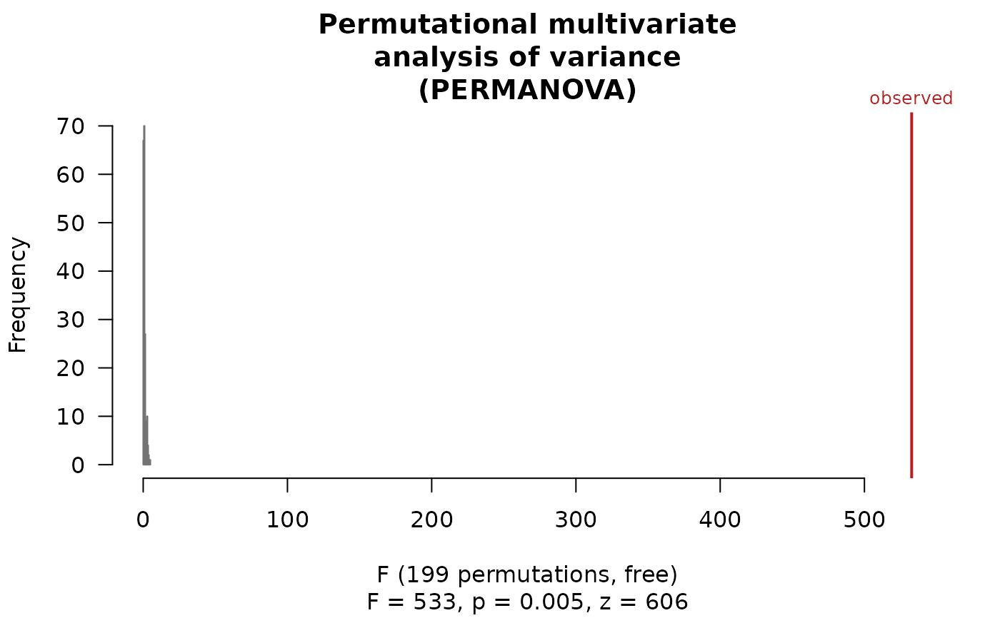
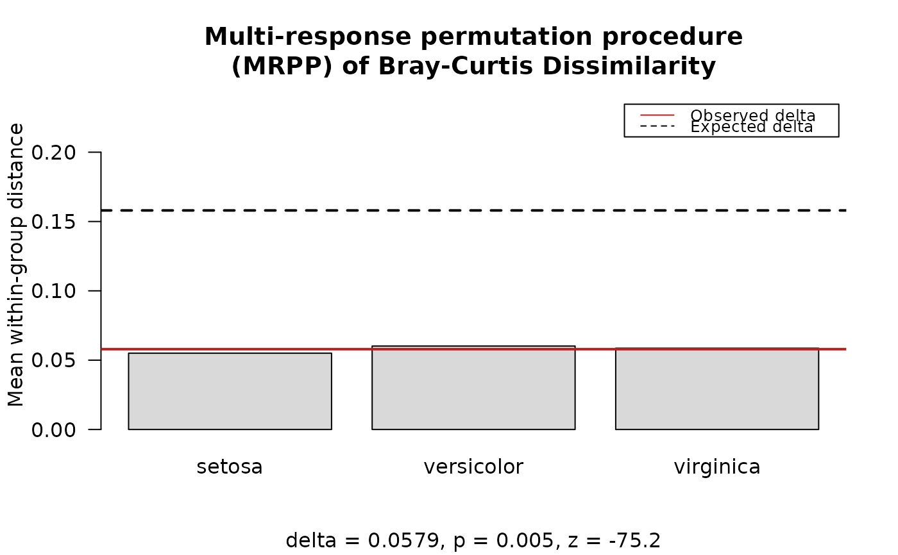
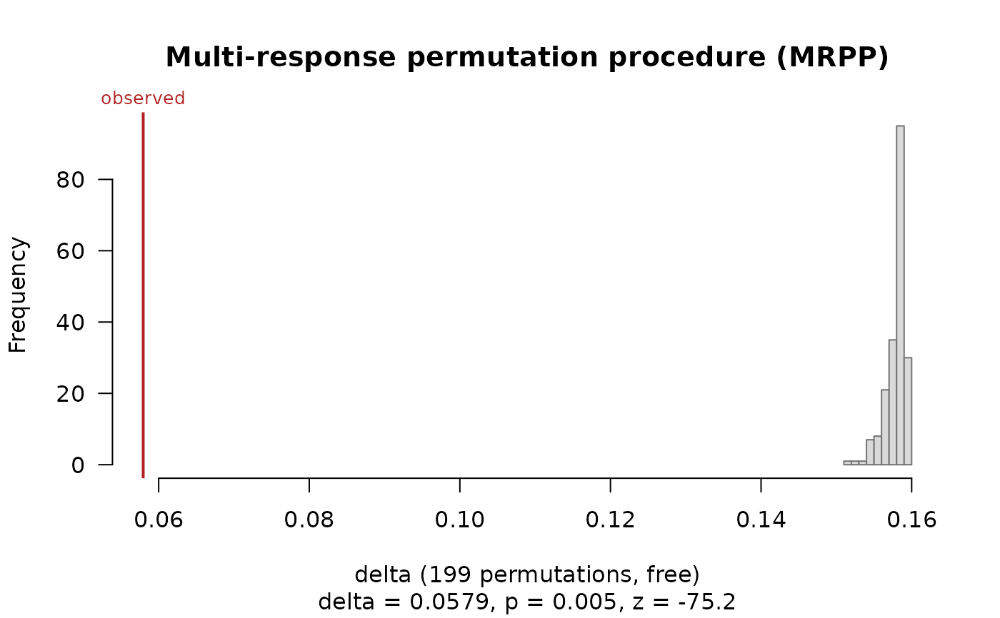
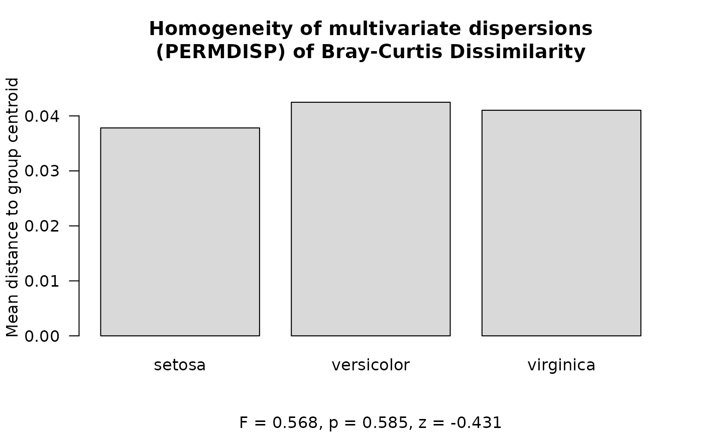
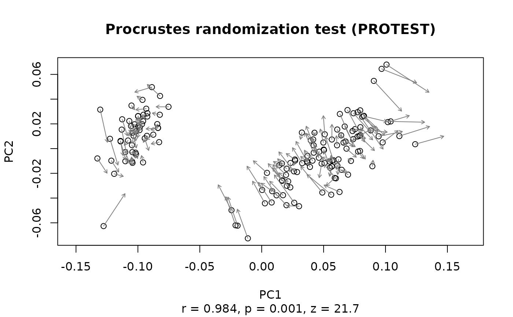

Plots the result of one of ecodive's permutation tests. By default,
permanova(), anosim(), mantel() and mantel_partial() results show
the permutation distribution of their statistic, with the observed value
marked; mrpp() shows each group's mean within-group distance;
permdisp() each group's dispersion; and procrustes_test() the
Procrustes fit. type = "null" shows the permutation distribution for any
of them. Nothing is recomputed: the plot is made from the stored results.
Usage
# S3 method for class 'ecodive_test'
plot(x, type = "null", ...)
# S3 method for class 'ecodive_mrpp'
plot(x, type = c("groups", "null"), ...)
# S3 method for class 'ecodive_permdisp'
plot(x, type = c("groups", "null"), ...)
# S3 method for class 'ecodive_procrustes_test'
plot(x, type = c("fit", "null"), ...)Arguments
- x
A permutation test result, of class
ecodive_test: frompermanova(),anosim(),mrpp(),mantel(),mantel_partial(),permdisp(),procrustes_test(), ordist_test().- type
What to draw:
"null"for the permutation distribution of the statistic; or formrpp()andpermdisp(),"groups"(their default) for a bar for each group; or forprocrustes_test(),"fit"(its default) for the Procrustes rotation, drawn byplot.ecodive_ord().- ...
Passed on to the plotting function:
graphics::hist()for"null",graphics::barplot()for"groups", andplot.ecodive_ord()for"fit". Such asmain,sub,xlab,colorbreaks; they replace the defaults made fromx.
Details
The title is the test's title (see ecodive_display): its name, and the metric of the distances it tested, as printed. The subtitle is its statistic, p-value and standardized effect size \(z\), as printed.
"null": a histogram of the statistic in each permutation (thef_perm,r_permordelta_permattribute), with a line at the observed statistic. The p-value is the proportion of permutations, with the observed one, at least as extreme as the observed statistic. It needs a test run withpermutationsabove 0."groups"formrpp(): the mean within-group distance of each group (class_delta), with lines at the observed \(\delta\) (their weighted mean) and the \(\delta\) expected by chance (expected_delta, the mean of all distances)."groups"forpermdisp(): each group's mean distance to its centroid or median (dispersions)."fit"forprocrustes_test(): the symmetric Procrustes rotation it tested (itsprocrustesfield), with an arrow from each sample to the target ordination.
Examples
dm <- bray(iris[, 1:4])
# The pseudo-F of each permutation, and the observed F.
res <- permanova(dm, 'Species', iris, permutations = 199)
plot(res)

# MRPP: each species' mean within-group distance.
res <- mrpp(dm, 'Species', iris, permutations = 199)
plot(res)

plot(res, type = 'null')

# PERMDISP: the dispersion of each species.
plot(permdisp(dm, 'Species', iris, permutations = 199))
#> Warning: Some squared distances to group centres are negative, and were set to 0.

# PROTEST: the Procrustes fit of two ordinations.
res <- procrustes_test(pcoa(dm, n_axes = 2), pca(iris[, 1:4], n_axes = 2))
plot(res)
